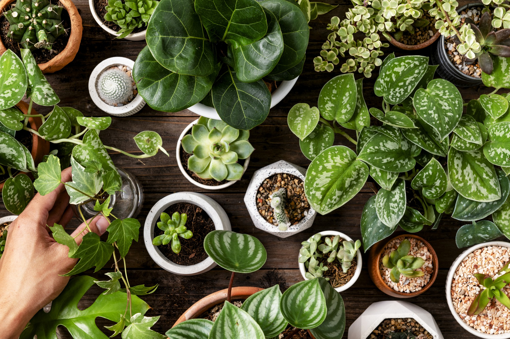

Complete Care
Let Jason's architectural vision bring your outdoor dreams to life with stunning landscapes that thrive in Tucson's unique climate. Lucky Shrub designs, creates, and maintains beautiful retreats that turn your yard into an oasis you can be proud of.
Indoor Oasis

Transform your home or office with Lucky Shrub's curated selection of indoor plants, from low-maintenance succulents to statement fiddle leaf figs. Maria's nursery expertise helps you find the perfect green companions for any indoor space.
Garden Paradise

Your one-stop shop for everything green at Lucky Shrub's full-service nursery with plants, pots, soil, and expert advice from our passionate team. Enjoy ongoing maintenance services to keep your gardens flourishing year-round in Arizona's desert climate.